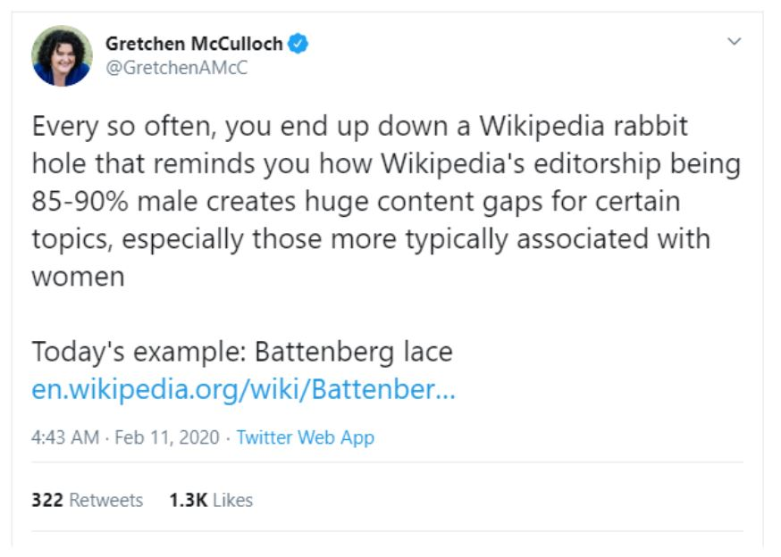

Charlette's Website
#13th Blog
Tweet Topics

I found this tweet interesting as it investigates the idea that due a large number of contributors on the internet are male. Wikipedia has a lot less information associated with woman. As I dug further into this topic, I found it interesting that a lot of discussion based off this topic, is largely found on the Wikipedia site. It seems fitting that this topic be addressed largely on the site with said problem at hand. I found an interesting article on Wikipedia titled “Gender bias on Wikipedia” that discusses this topic. In the article it addresses:
“A dominant majority of volunteer Wikipedia editors, particularly on the English-language site, are male. Also, there are fewer and less extensive articles about women or topics important to women.”[1]It goes on to discuss that this is due to three contributing factors of “(1) the high levels of conflict in discussions, (2) dislike of critical environments, and (3) lack of confidence in editing other contributors' work.”[1] Stating that these are factors woman face when trying to create content on Wikipedia and is why the women’s topics have been so neglected. Since this is a Wikipedia article, I find it openly bias in these statements saying that these are the factors that women face and that is why they are not able to contribute. Implying that woman not producing content on Wikipedia due to avoiding conflict or not having enough confidence in themselves to produce and edit content on Wikipedia.
I find this extremely problematic that the first article showed on this topic openly implies that it is the women’s problem and that is why their content is not being focused on. The article fails to consider or discuss aspects on why there is such a critical and hostile environment over Wikipedia, not allowing female editors to feel comfortable to discuss topics and female icons without being harshly criticised.
However, there is some bias discussed in the article that highlights the problematic community of Wikipedia in terms of male bias. This focuses on how men and women are described across articles. As for women their female gender and family relations is focused on. But for men gender is not focused and is assumed that male is a norm. This highlights how men are given more attention across the Wikipedia site as females genders have to be stated out as there is not as much information about women across the site. And men do not because the majority of the men are focused on.
“However, analysis with computational linguistics concluded that the way women and men are described in articles demonstrates bias, with articles about women more likely to use more words relating to gender and family. The researchers believe that this is a sign Wikipedia editors consider male the "null gender" (in other words, that "male" is assumed unless otherwise specified, an example of male as norm)”[1]In conclusion, I feel that we as women must try creating our own community across Wikipedia. Where iconic women and female related topics are openly available and discussed across the site. Creating a safer environment for women and proving to the male dominated side of Wikipedia that topics related to women are just important as topics related to males.
References:
1. Gender bias on Wikipedia. (2020). Retrieved 3 June 2020, from https://en.wikipedia.org/wiki/Gender_bias_on_Wikipedia#:~:text= A%202015%20survey%20of%20contributors, 15%25%20of%20contributors%20were%20women.&text= However%2C%20analysis%20with%20computational%20linguistics ,relating%20to%20gender%20and%20family.